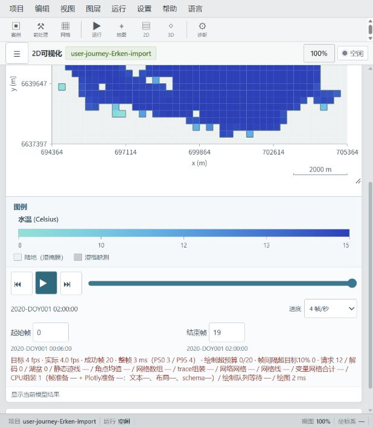
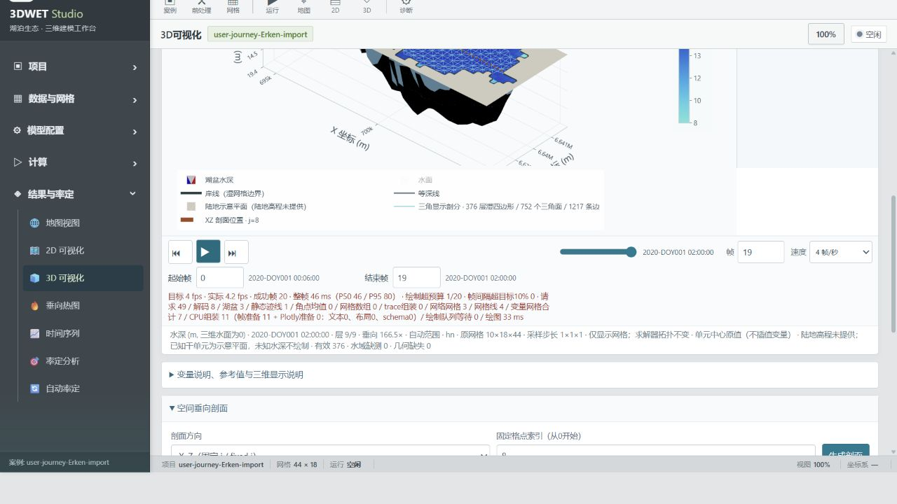

选择你的起点
第一次使用？从安装开始。已有案例？直接检查输入和运行状态。
01 安装与首次启动
- 双击
3DWETStudio-Setup.exe，按向导安装。默认安装目录为%LOCALAPPDATA%\Programs\3DWET Studio。 - 从开始菜单或桌面启动“3DWET Studio（桌面 Desktop）”；也可通过开始菜单选择浏览器模式。
- 在“环境与启动诊断”确认求解器、运行库及案例存储可用，再用短时案例试算。
安装包内置预编译求解器和运行环境；运行现有模型无需另装 Python、编译器或修改 PATH。桌面模式需要 WebView2 Runtime 与 .NET Framework 4.6.2 或更高版本，安装器会检查。
案例与输出默认使用非系统盘
GETM-FABM-WET-outputs，优先 D 盘；启动前可通过 WET_CASE_DIR 指定可写的非 C 盘案例目录。以诊断页面实际结果为准。02 案例与输入
在“案例管理”加载 NativeTest 或 StudioDemo，先熟悉完整流程。它们是短时功能演示，不代表真实湖泊的率定结果。
准备自己的案例
- 在案例管理或前处理中新建案例；导入湖岸边界和水深数据，生成网格，检查坐标系、单位、边界和深度。
- 在输入数据中准备气象和河流驱动；核对站点位置、单位和时间覆盖范围。
- 检查模块配置、生态网络、参数、初始条件和时间设置，保存修改并重新查看诊断。
不同数据格式和坐标系以页面提示为准。地图底图可能需要联网；本地模型运行和本地结果文件不依赖在线底图。
03 运行计算
- 在“运行控制”启动计算，查看状态、进度和日志。
- 先短时试算，确认输出正常，再逐步延长时段；检查驱动覆盖、时间步长、网格和数值稳定性。
- 运行期间不要移动或删除案例目录；关闭程序前等待结束，或在运行控制中停止任务。
结果受输入、参数、边界条件和数值设置共同影响；界面显示完成并不等于科学验证。
04 查看结果
计算结束后，可在“2D 可视化”“3D 可视化”“垂向热图”或“时间序列”中选择可用变量与时间。图像或表格可通过对应页面的导出控件保存。可选内容取决于案例实际输出。


05 案例迁移
内置示例随安装包提供；用户案例和结果不会自动打进安装包。先备份完整案例输入和需要保留的结果，并检查配置是否引用案例目录外的绝对路径。
- 将源案例目录复制到目标电脑可访问的位置。
- 在“项目导入与物理设置”选择“导入项目副本”，填写源目录或
project.json路径及新案例名称，选择“复制到案例库”。 - 按提示补齐网格或驱动，并重新选择外部绝对路径所指向的文件。
导入副本保留源文件，会跳过运行输出、日志、备份、缓存、隐藏文件和链接；需要的历史结果请另行备份。不要只复制 NetCDF 输出代替完整输入案例。
06 问题与限制
启动或计算遇到问题
打开“环境与启动诊断”，记录完整错误信息；尝试使用 NativeTest 重现。反馈时提供 Windows 与应用版本、页面和操作步骤、案例类型、诊断信息及相关日志。用户日志位于 %LOCALAPPDATA%\3DWET Studio\logs，模型日志也可能在案例目录。
使用与维护
- 模拟可能生成大型 NetCDF 文件，预留磁盘空间并备份案例和结果。
- 升级保留用户修改的案例配置；卸载保留案例、模型输出和用户新增文件。
- 模型结果需要结合数据质量、参数和观测独立判断；演示案例与界面截图仅用于操作说明。
- 修改 Fortran 源码并重新编译需要额外的工具链。第三方许可和依赖版本见安装目录的
THIRD_PARTY_LICENSES与DEPENDENCIES.txt。